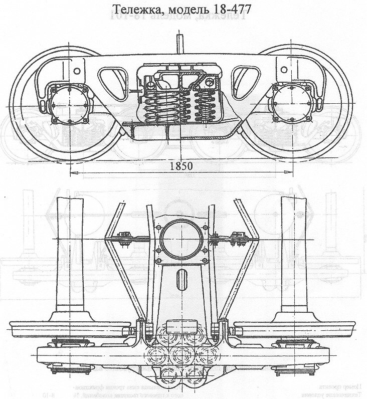

Назначение: для подкатки под 4-осные грузовые вагоны
Параметры
| Номер проекта | 477.30.000 |
| Технические условия | ТУ 24.05.341-83 |
| Модель | 18-477 |
| Изготовитель | Днепродзержинский в.з., ДВЗ им. газеты "Правда" |
| Масса тележки, т | 5,9 |
| База, мм | 1850 |
| Статический прогиб рессорного комплекта, мм | 42,5 |
| Гибкость рессорного комплекта, м/МН | 0,13 |
| Колеса цельнокатанные диаметром, мм | 950 |
| Высота опорной поверхности подпятника от головки рельса,мм | 788+10-5 |